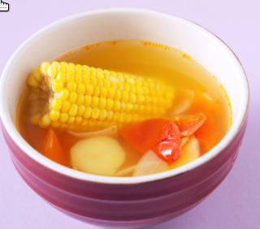

ABC Soup Recipe

This is a simple one pot soup that can be made in an hour, try it now!
Ingredients
- Uncooked Sweet Corn
- Carrots, Potatoes, Tomatoes
- Yellow Onions, Red dates and Honey Dates
- Chicken Thigh
- Light soy sauce and salt to taste
Steps
- Boil pot of water, add salt and let it boil
- Slice chicken thigh, add to boiling water and simmer
- Peel sweet corn and chop into bite sized pieces
- Skin carrot and potatoes, cut into bite sized pieces
- Slice tomatoes into bite sized pieces
- Chop yellow onions and wash both dates
- Skim any dirt from boiling water, remove chicken
- Add all vegetables and dates into same boiling water
- Add 3 tbsp of light soy sauce and let simmer till vegetables are soft
- Add chicken thigh back into soup and salt to taste
- Ready to serve, Enjoy!